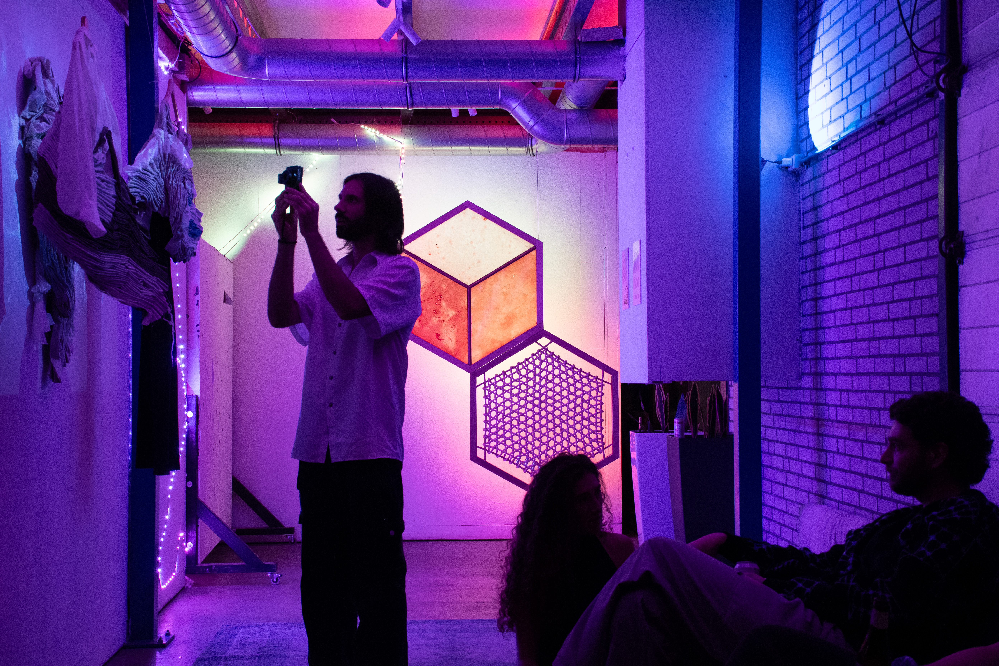
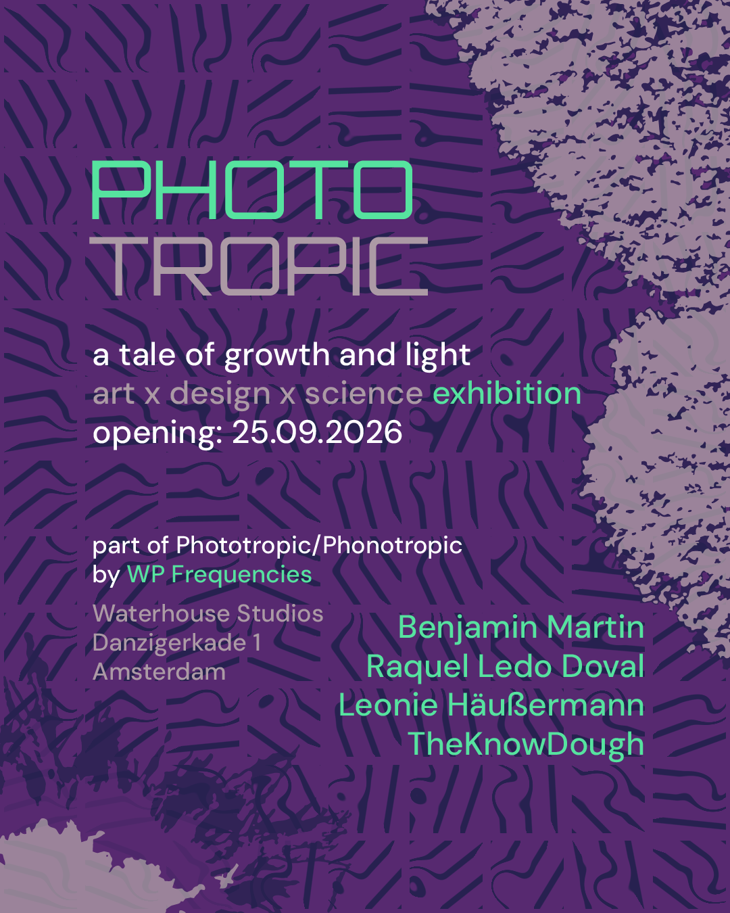
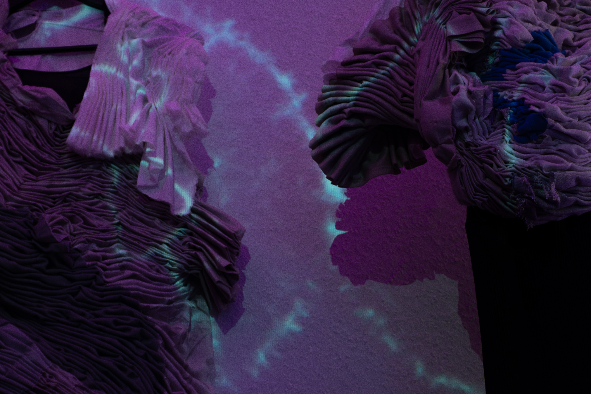
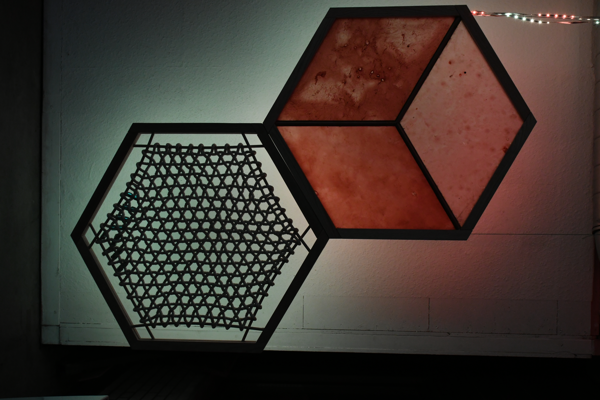
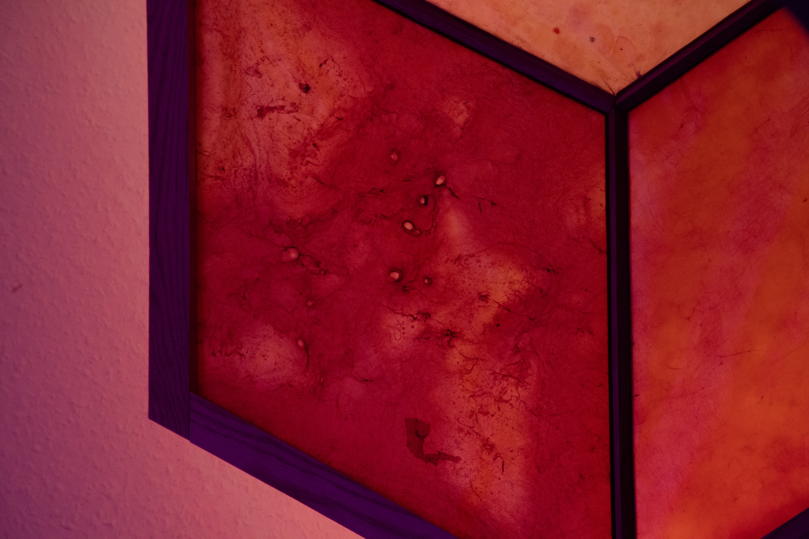
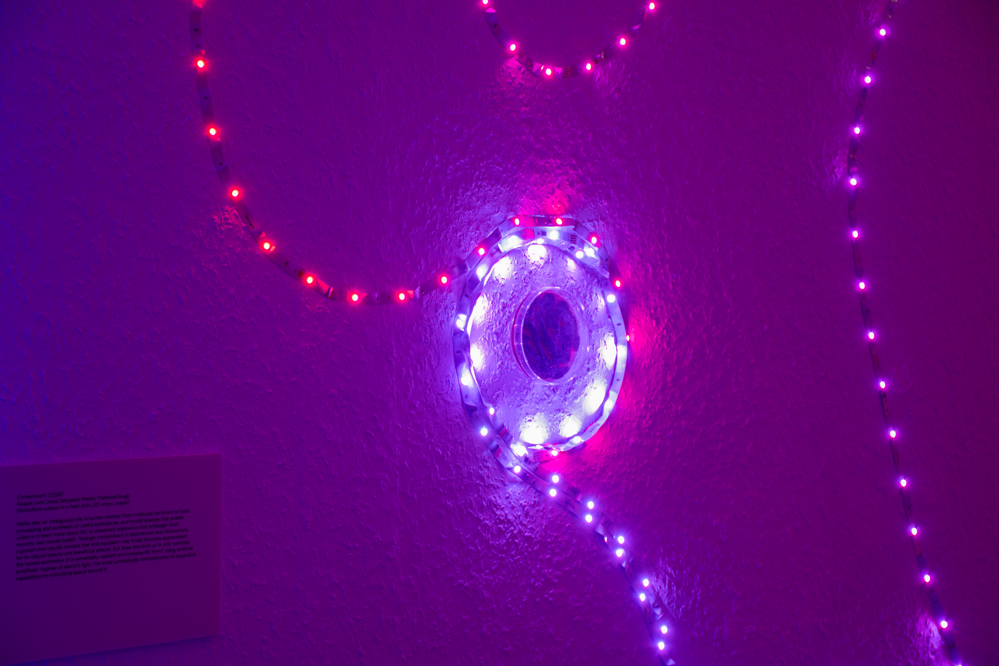
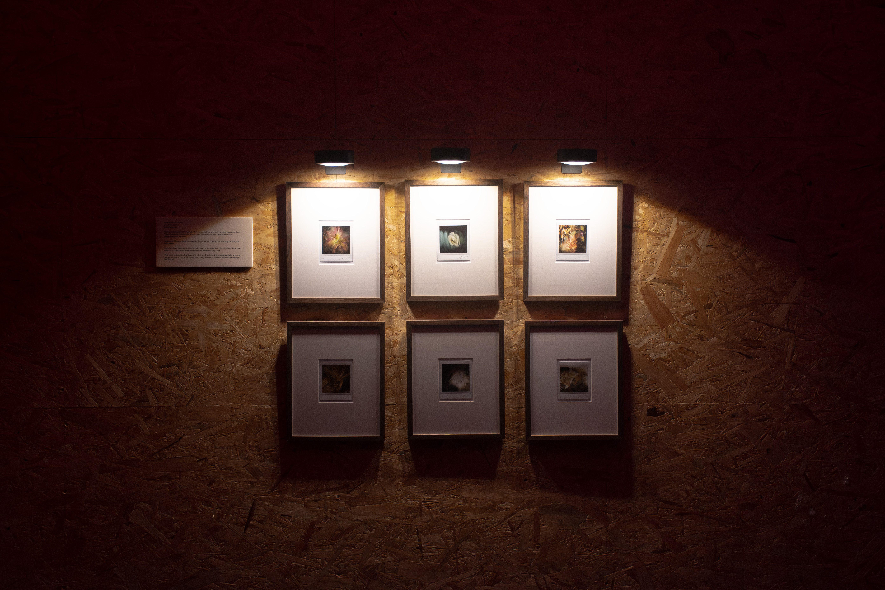

Exhibition in collaboration with
Benjamin Martin, Leonie Häußermann,
Raquel Ledo Doval
2026, Amsterdam

Phototropic exhibition at
Waterhouse Studios, Amsterdam.
The exhibition Phototropic was conceived as a complementary space of the music event Phonotropic organised by . I co-curated the exhibition with Benjamin Martin, showcasing a collaborative arrangement of artworks by him, myself, Leonie Häußermann and Raquel Ledo Doval.

Poster for Phototropic
by TheKnowDough.
The primary elements of the exhibition, growth and light, constituted a counterpoint to those of moving bodies and sound that govern the realm of the dancefloor. We united the exhibition and the rave under the notion of tropisms - the ways living organisms orient, grow and move in response to their environment.

Detail of myCelium I-III
by Leonie Häußermann, Raquel Ledo Doval, TheKnowDough.
In particular, we focused on design and photography as media that intersect perspectives of the perceived dichotomy of human and nature, of artificial and organic. Growth simulation algorithms transform microscopic images of marine fungi, projecting their shifting forms onto myco-inspired garments. As fungal structures encounter textile and body, biological and designed surfaces overlap, mimicking the dynamic interactions through which organisms respond to and transform one another. A Petri dish with a preserved mold culture becomes the nucleus of a hyphal network that pulsates with light, growing through space to inoculate geometrically framed wall pieces that juxtapose human-woven and bacteria-woven textiles. Photographic miniatures of frozen flower petals found on an Amsterdam market complete this arrangement. Largely made in collaboration between the artists, the artworks symbiotically touch, merge and intertwine into a coherent ecosystem.

Biotapestries
by TheKnowDough.
The exhibition featured my work Biotapestries. Devised as prototypes for biobased material systems, two backlit wall panels present contrasting realisations of a woven tissue - one manufactured on a macro scale, by a human hand, following well-formulated geometric rules and instructions provided by a computer programme; another produced on a micro scale, by a symbiotic colony of bacteria and yeast (SCOBY) during a fermentation process. Containing mostly regenerative biomaterials, the assemblies play with notions of artificiality and control, and speculate on how humans can co-produce artefacts with other living organisms that they share an ecosystem with.

Detail of Biotapestries
by TheKnowDough.
The exhibits from the myCelium series built up on an existing collaboration between Leonie Häußermann and Raquel Ledo Doval. The installation brings together fashion and microbial imagery to explore interactions between living systems across different scales. Microscopic images of marine fungi are projected onto sculptural garments, allowing fungal forms to spread across, merge with and transform the textile surface. Rather than reproducing a biological interaction literally, the projection mimics the ways organisms encounter one another: overlapping, adapting and temporarily altering their surroundings. The human body, textile and fungal image become layered substrates for one another, blurring distinctions between organism and environment, host and inhabitant, artificial and organic. As the wearer moves, these relationships continuously shift, turning the garment into a transient ecosystem rather than a fixed object.

Detail of Containment
by Raquel Ledo Doval, TheKnowDough.
For this edition of the installation, I introduced an additional layer of biological abstraction by modulating the microscopic images with an algorithm inspired by the growth of slime mold (Physarum polycephalum).
For the installation Containment, Raquel Ledo Doval prepared a culture of Penicillium mold in a Petri dish. By staging this laboratory artefact with colourful illumination from a prosthetic network of artificial hyphae, we played with the ideas of sterility and invasiveness that mark the relationship between humans and molds.

Lost & Found
by Benjamin Martin.
Finally, the Polaroid series Lost & Found by Benjamin Martin presents another still life perspective on living and decaying matter in human environments. Benjamin describes his photographs as follows:
Hopes and dreams don’t vanish, they freeze in time and wait for us to resurrect them. These Polaroids capture the leftovers of the Noordermarkt, discarded fruits, vegetables, and flowers.
I gather and freeze them to make art. Though their original purpose is gone, they still hold value.
I cherish them the way we cherish old hopes and memories. We hold on to them, find comfort in them, even when we know they will eventually fade.
This work is about finding beauty in what is left behind. It is a quiet reminder that the things we lose do not truly disappear. They just wait in stillness, ready to be brought back to life.